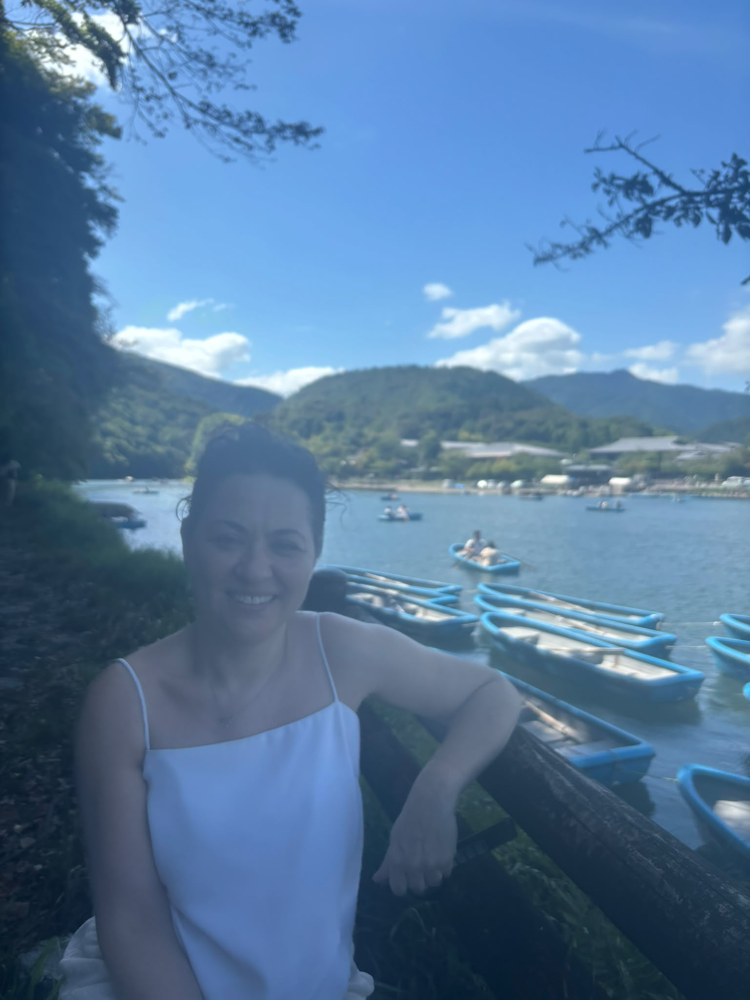
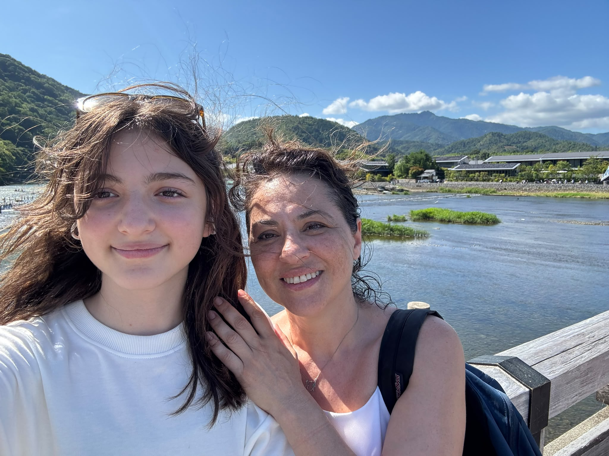
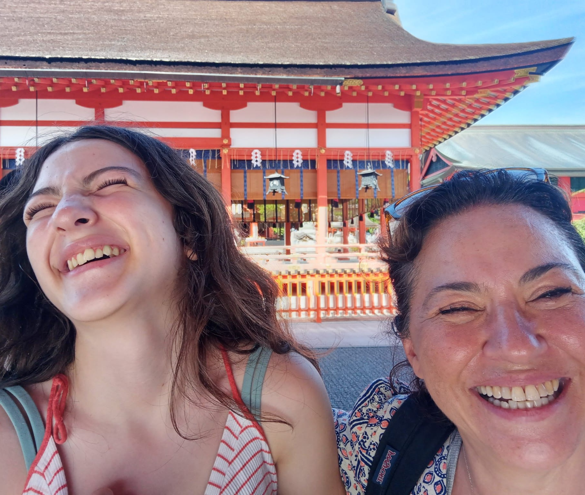
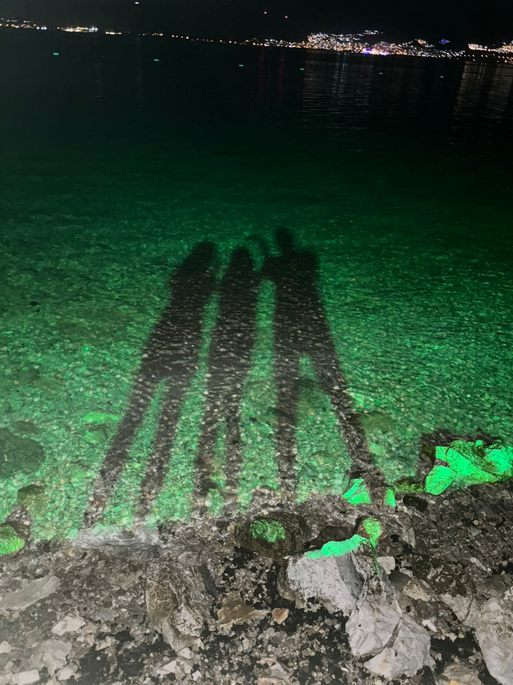
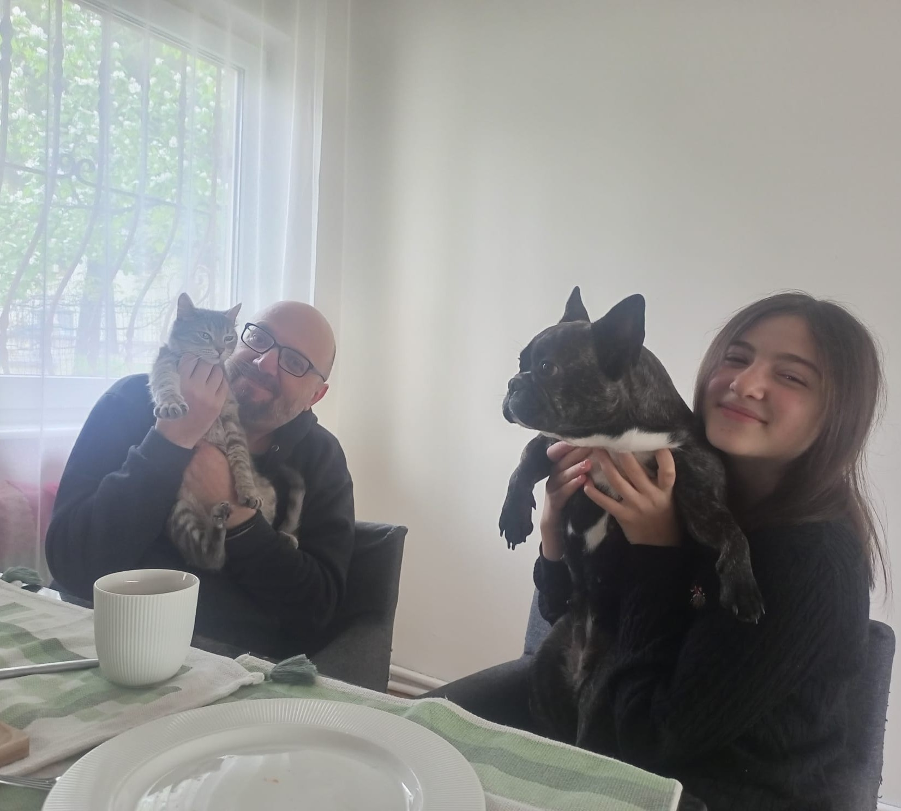
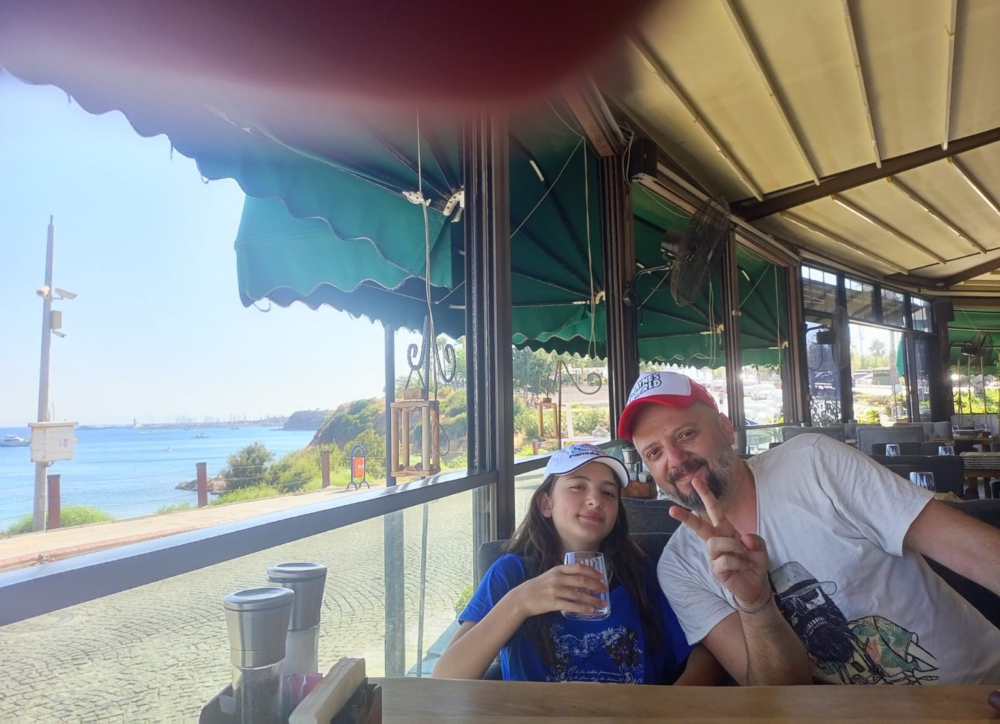
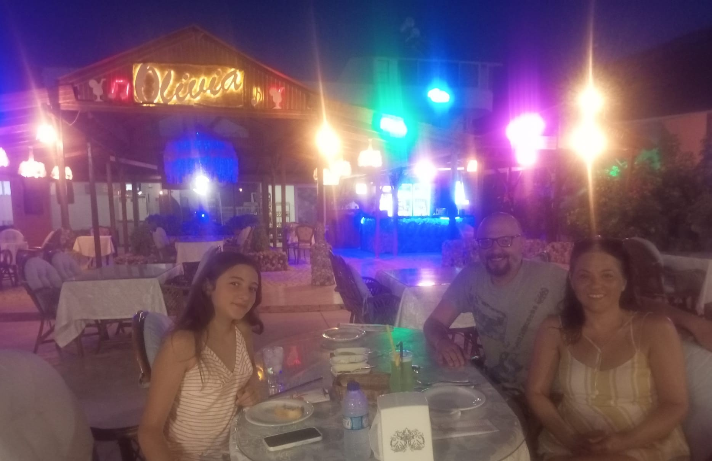

Spectrally negative Lévy processes
Scale functions, fluctuation identities, first-passage problems, path decompositions, and Doob h-transforms.
Associate Professor · Middle East Technical University
Probability Theory · Lévy Processes · Fractional Brownian Motion
I am an Associate Professor in the Department of Statistics at Middle East Technical University (METU). My research focuses on stochastic processes and their path properties, with particular emphasis on spectrally negative Lévy processes, fractional Brownian motion, extreme values, maximum drawdown and drawup, fluctuation theory, and applications in risk and financial mathematics.
Research
I study probabilistic structures that connect path behavior, extremes, and quantitative risk.
Scale functions, fluctuation identities, first-passage problems, path decompositions, and Doob h-transforms.
Joint and conditional laws of maximum losses and gains, ordering of terminal extrema, and Brownian specializations.
Stochastic-process path properties, risk analysis, financial mathematics, and applications involving rare or extreme events.
Suprema and maximum-loss functionals, drifted models, Hurst-parameter estimation, discretization and random-walk approximations, with applications to commodity-price cycles.
Fractional Brownian Motion
My work on fractional Brownian motion studies extremes and path-dependent loss measures, statistical estimation of long-range dependence, approximation methods, and applications to financial and commodity-price data.

“The same curiosity that drives a proof can also question the way we look at the world and this inhumane system surrounding us. ”
Grants
Research support for work on Lévy processes, fractional Brownian motion, extremes, drawdown duration, and quantitative risk.
Principal Investigator · Project No. 124F094 · with Mine Çağlar and İ. Ünalmış.
Project record ↗Principal Investigator · International bilateral collaboration with Florin Avram.
Principal Investigator · Higher Education Institutions supported project · with Mine Çağlar.
Principal Investigator · Early-career research project on path extrema and maximum-loss distributions.
Publications
With Emre Akdoğan · arXiv:2609.03634. Current work on conditional path decompositions, scale functions, and ordered extrema. arXiv ↗
With Mine Çağlar · arXiv:2606.27573. arXiv ↗
Communications in Mathematics and Statistics, 14(2), 369–390.
Applied Stochastic Models in Business and Industry, 42.
Stochastic Processes and their Applications, 150, 1109–1138.
Journal of Theoretical Probability, 34(3), 1486–1505.
ESAIM: Probability and Statistics, 24, 454–525.
Extremes, 20(2), 301–308.
Talks & Conferences
Selected international meetings and presentations.
7th European Actuarial Journal Conference, Istanbul, Türkiye. Joint work with Emre Akdoğan.
9th International Conference on Econometrics and Statistics, Ryukoku University, Kyoto, Japan.
Workshop “SGD: Stability, Momentum Acceleration and Heavy Tails”, Isaac Newton Institute for Mathematical Sciences; workshop held at The Alan Turing Institute, London.
Talk page / recording ↗Teaching
Probability, inference, and stochastic-process courses from foundational to graduate level.
Sigma Algebras, Random Variables, Weak Law of Large Numbers, Strong Law of Large Numbers, Independence of Sigma Algebras, Central Limit Theorems.
Likelihood methods, testing, estimation, and advanced inferential reasoning.
Ito Calculus.
Bayesian inference, MCMC, Sequential Monte Carlo and Hidden Markov Models.
Multivariate normal theory, MANOVA, principal components, factor analysis, classification, clustering, and canonical correlation.
Stochastic modeling, Black-Scholes Model, risk, extremes, and applications of probability in finance and insurance.
Markov chains, Poisson processes, renewal ideas, and stochastic-process foundations.
Random variables, distributions, expectation, convergence, and probabilistic modeling.
CV
2020–present
Associate Professor, Department of Statistics, Middle East Technical University.
PhD — Mathematics and Statistics, Bowling Green State University, 2008.
MSc — Statistics, Middle East Technical University, 2002.
BSc — Statistics, Middle East Technical University, 1999.
Probability theory · stochastic processes · Lévy processes · fractional Brownian motion · path properties · extreme values · risk analysis · financial mathematics · asymptotic distributions.
Research supervision in stochastic processes, Lévy processes, financial mathematics, extreme values, and related applications.
PhD — JOINT DISTRIBUTIONS OF THE MAXIMUM DRAWDOWN ANDMAXIMUM DRAWUP IN LÉVY PROCESSES, Vardar Acar C. (Supervisor), E.AKDOĞAN, PhD, 2025.
MSc — QUANTUM RANDOM WALK SIMULATION USING DEPENDENT RANDOM WALK Vardar Acar C. (Supervısor), M.KAŞİF, MSc, 2024.
MSc — Methodology of identifying super-cycles in silver prices, Vardar Acar C. (Supervısor), T.SOYSAL, Msc, 2023.
MSc — Various parameter estimation techniques for stochastic differential equations, Vardar Acar C. (Supervısor), S.ERGİŞİ, Msc, 2019.
MSc — Parameter estimation in merton jump diffusion model, Vardar Acar C. (Supervisor), T.ADEM, Msc, 2019.
MSc — A generalized correlated random walk approximation to fractional brownian motion, Vardar Acar C. (Supervisor), B.COŞKUN, Msc, 2018.
MSc — Duration of maximum drawdown in oil prices, Vardar Acar C. (Supervisor), M.SALCI, Msc, 2018.
MSc — Stochastic delay differential equations, Vardar Acar C. (Co-Supervisor), E.EZGİ, MSc, 2017.
MSc — Hisse senetlerinde olabilecek en büyük kaybın asimptotik dağılımı uygulamaları, VARDAR ACAR C. (Supervisor), Z.İSLAMOV, MSc, 2013.
MSc — Kesikli stokastik popülasyon modelleri ve gecikme etkisi, VARDAR ACAR C. (Supervisor), E.EMİN, Msc, 2013.
MSc — Kesirli brown hareketinin maksimum kayıp ve supremum değişkenleri, VARDAR ACAR C. (Supervisor), H.ÇAKAR, MSc, 2012.
Beyond Research
Family, travel, nature, and the moments in between.






Contact
I am happy to hear from colleagues, students, and potential collaborators.